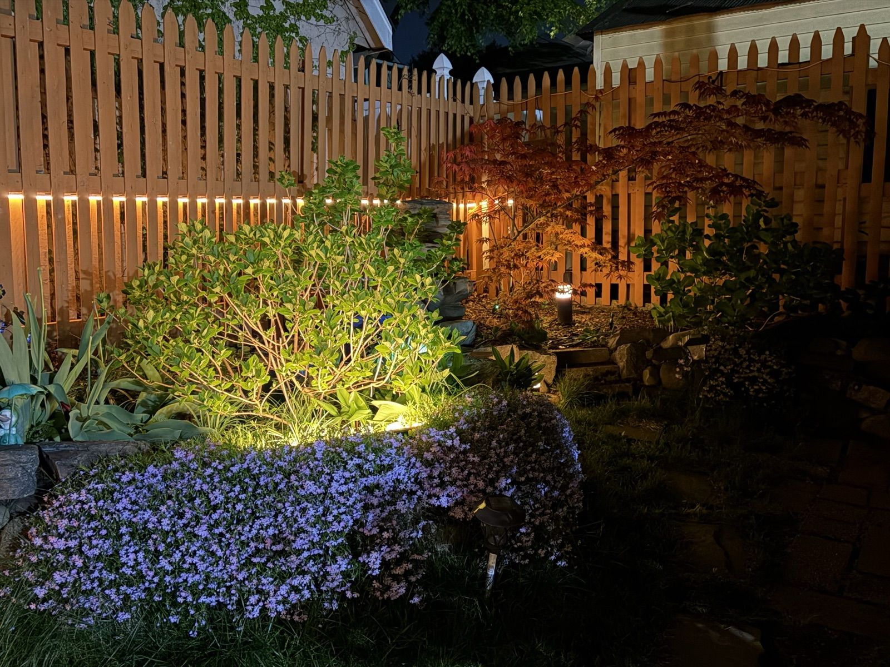
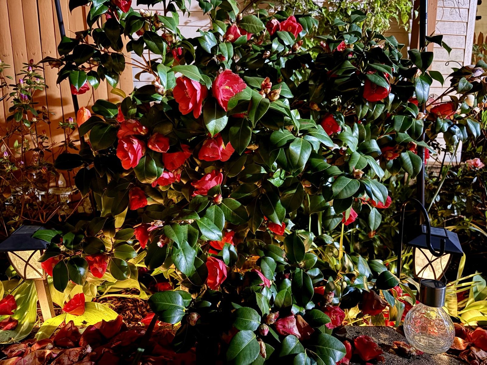
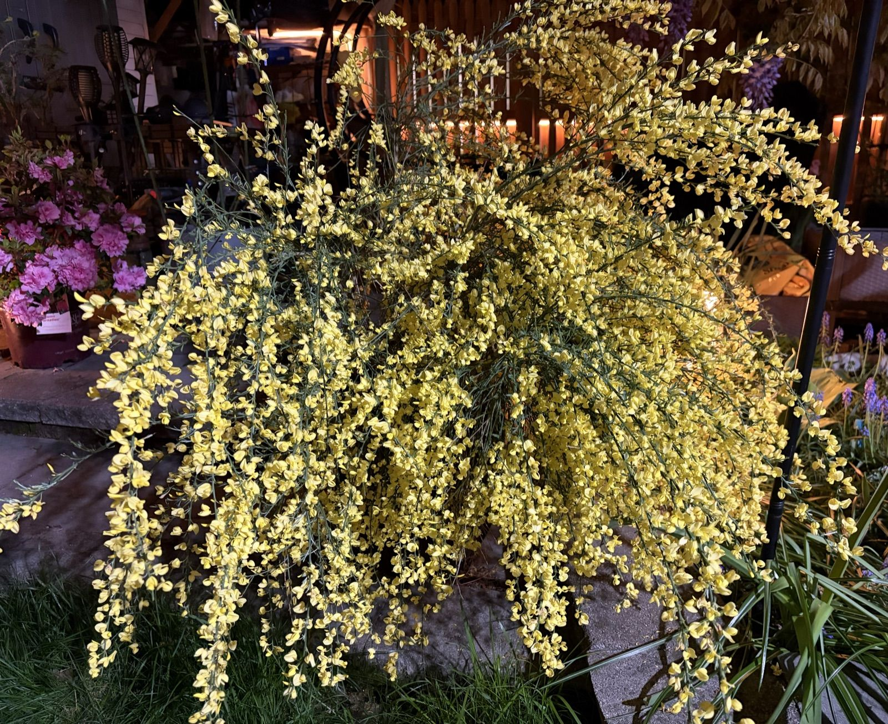
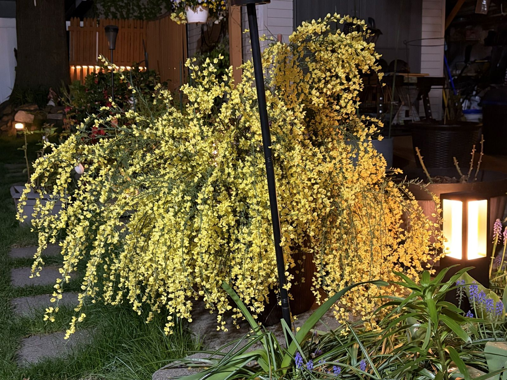

The Garden After Dark
Confession: some nights I like the garden better after ten o'clock. The colors you lose, you get back in shadows and lamplight, and every plant you've walked past a hundred times becomes theatrical.

The whole effect comes from embarrassingly few lights: a strip along the fence rail, one ground spotlight aimed up into the hydrangea, and scattered solar stakes. The Japanese maple doesn't need anything — it just borrows glow from the fence and broods, which is what Japanese maples are for.

The camellia is the last of the spring-bloomers and the most dramatic about it. Under the lanterns the red flowers go velvet-dark and the dropped petals pool underneath like someone spilled a case of them. I refuse to rake those until they brown; they're part of the show.


But the night-garden MVP is the Scotch broom. By day it's a cheerful yellow fountain; by lamplight it turns to actual gold, thousands of little pea-flowers bouncing the light around. It's the first thing you see from the back door and it makes the whole yard look warm.
If you're thinking about garden lighting, my one hard-won rule: fewer, lower, warmer. Nothing over 3000K, nothing pointed at your own windows, and light the plants — not the lawn.